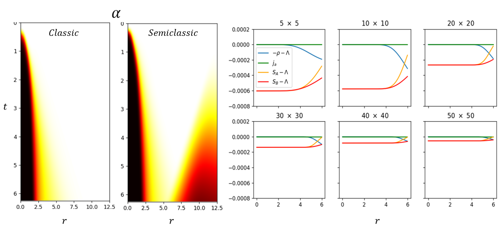

Proyectos
Ciencia de Datos · Machine Learning
Predicción de niveles de PM2.5
Análisis, preprocesamiento y modelado de datos de calidad del aire y variables
meteorológicas para clasificar y predecir niveles de alerta por material
particulado (PM2.5) en Corea del Sur, mediante Random Forest y XGBoost.
- Ingeniería de features
- Series temporales
- Validación cruzada temporal
- Optimización de hiperparámetros
Análisis Económico
Actividad económica regional a partir del PIB
Análisis del PIB regional de Chile (2013 – primer semestre 2024) usando la API
bcchapi del Banco Central: tendencias, contribuciones sectoriales,
impacto del COVID y correlación con la generación eléctrica.
- Análisis exploratorio de datos
- Consumo de APIs
- Integración de fuentes de datos
- Comunicación de resultados
Finanzas Cuantitativas
Simulación Monte Carlo y análisis de riesgo de activos
Simulación estocástica de precios mediante Monte Carlo bajo el modelo
Black–Scholes–Merton, aplicada a SQM-B.SN (Bolsa de Santiago) con datos históricos
de Yahoo Finance, junto con automatización de reportes en Excel con métricas de
benchmark.
- Simulación estocástica
- Modelado financiero
- Análisis de riesgo
- Automatización de reportes
Deep Learning · Física Computacional
Simulaciones físicas mediante PINNs
Compilación de simulaciones con Physics-Informed Neural Networks en PyTorch para
distintos sistemas dinámicos — oscilador armónico, Lotka-Volterra, FitzHugh-Nagumo
y la ecuación de onda — explorando entrenamiento de parámetros, estrategias de
muestreo, time marching y simulaciones en 2D.
- Physics-Informed Neural Networks
- Resolución de EDPs
- Optimización
- Modelado físico
Física Computacional · Tesis
Simulación HPC de colapso gravitacional de campos cuánticos

Réplica de los resultados de "Gravitational Collapse of Quantum Fields and
Choptuik Scaling", con una condición de borde absorbente modificada. El sistema
corresponde a un campo escalar sin masa con corrección cuántica mediante estados
coherentes en un espacio-tiempo con simetría esférica, usando regularización de
Pauli–Villars con cinco campos reguladores y constante cosmológica para tratar las
divergencias de la teoría.
- Computación de alto rendimiento (HPC)
- Programación paralela con GPU
- Diferencias finitas de alto orden
- Runge-Kutta implícito de décimo orden
- Condiciones de borde absorbentes